According to the betweenness centrality, the stations with higher scores concentrate in the relatively low urban density area rather than
the city center which located in the south of Singapore. The Downtown line and North East line have the most significant values and the Newton MRT station
is the most significant one in the system. The LRT can be considered as a limitation of the network, which influences the betweenness to some extent.
Regarding that, the east part of Downtown line is the most important area in the system.

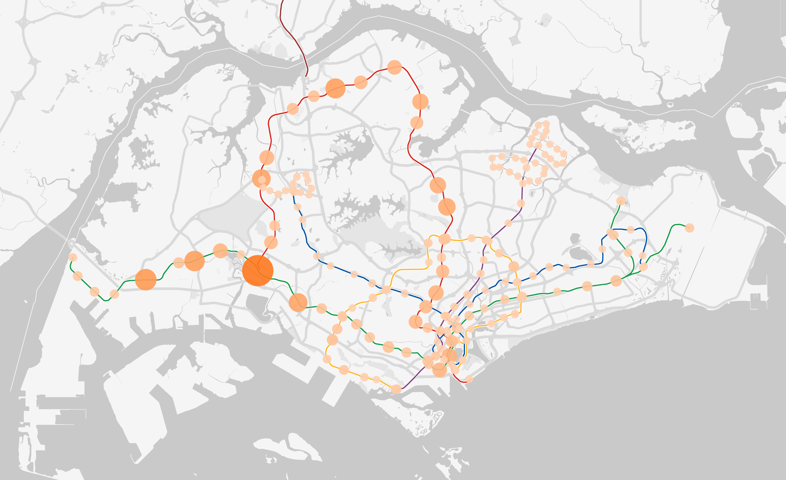
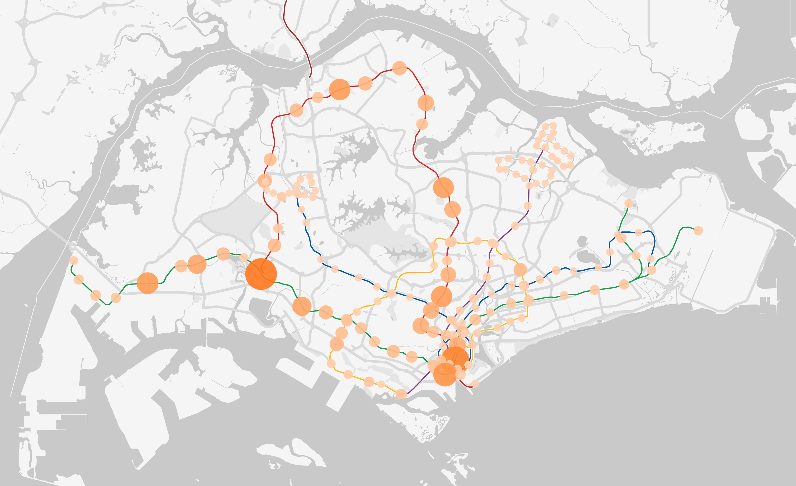
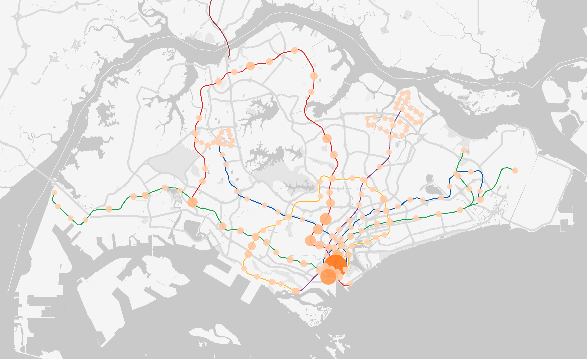
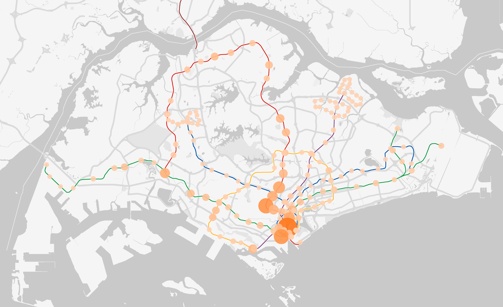
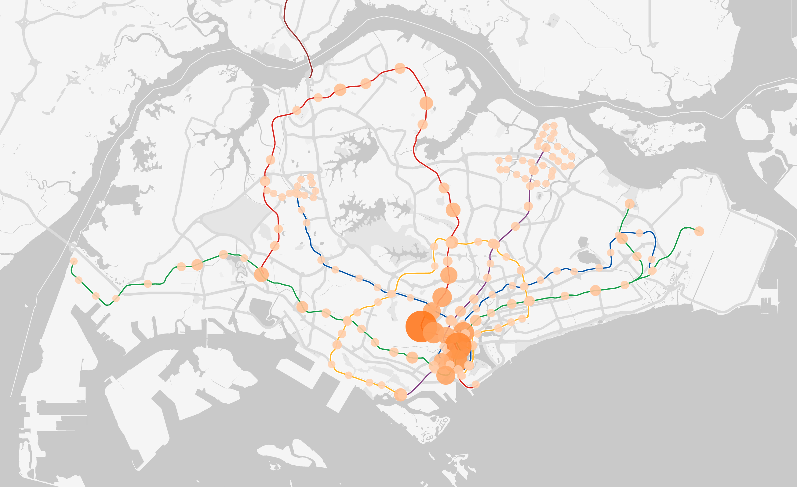
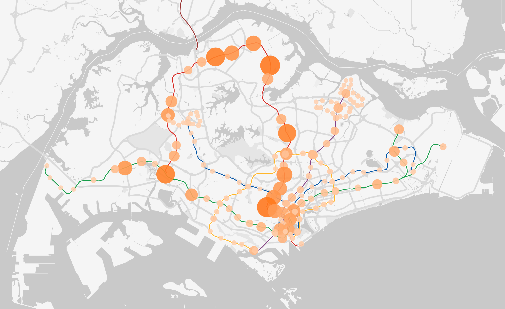
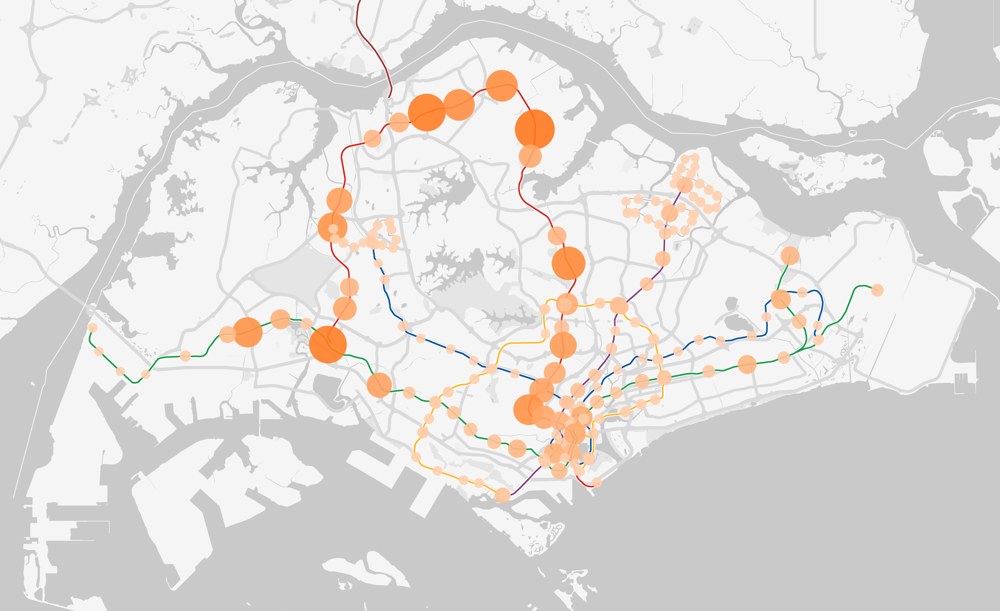
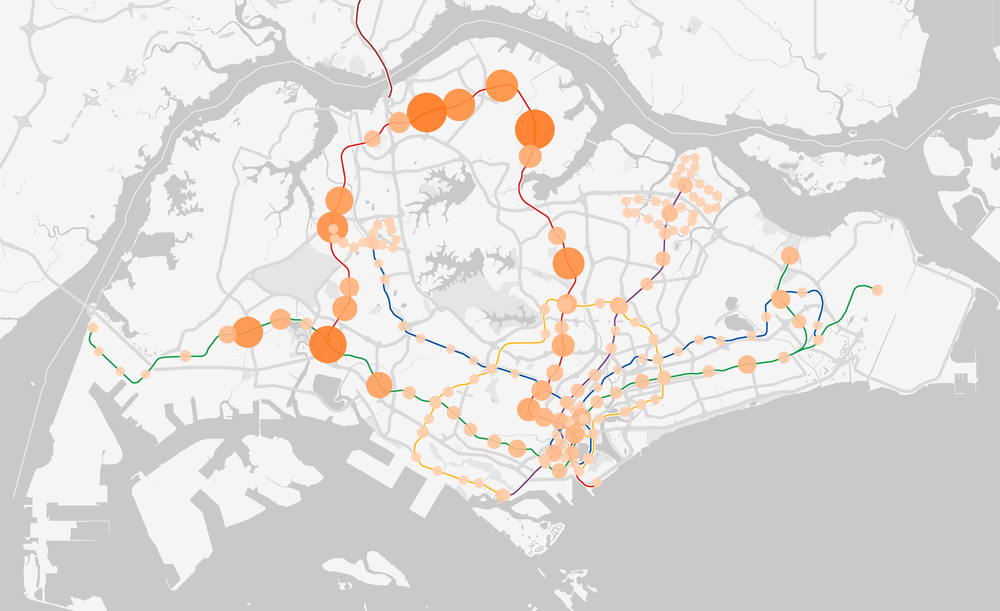
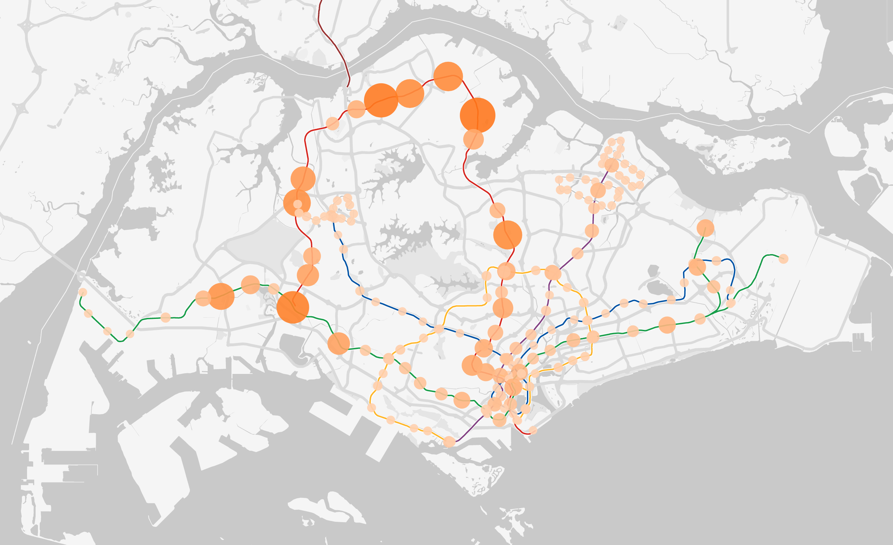
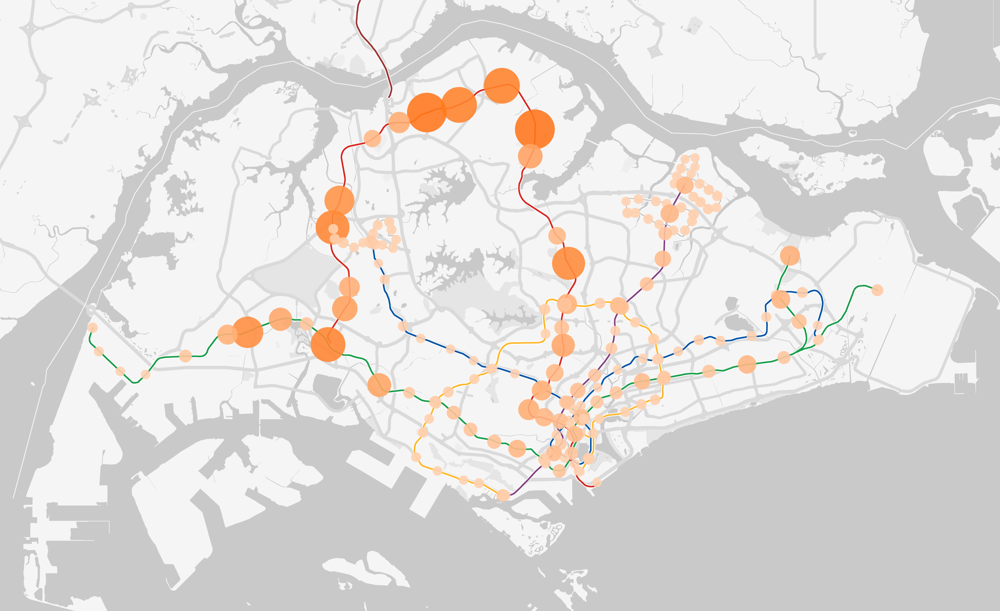
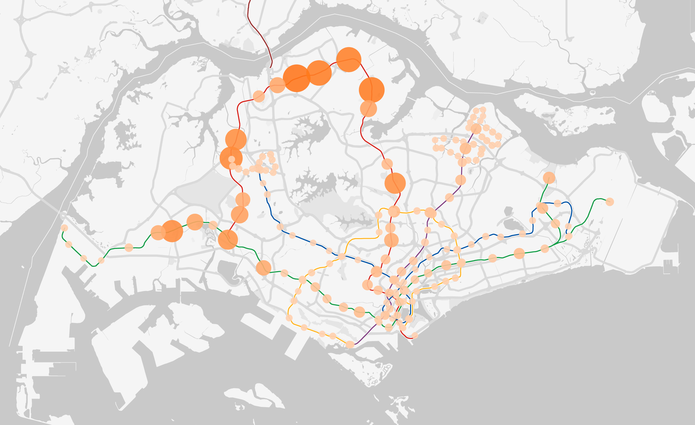
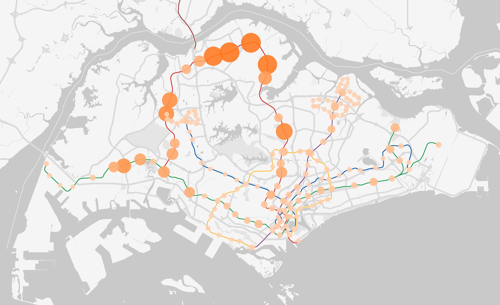
While the betweenness centrality of stations produced by the static train network show that the stations on downtown(blue) line and
north-south(purple) line have relatively important in the train system. The results from the eigenvector shows a very different . As mentioned earlier,
the eigenvector centrality was measure using the flow data of commuters in the Singapore train system, which forms the dynamic network. the eigenvector
centrality of each stations varies with time and reveals the travel pattern. Using the interactive visualization of eigenvector, it could be
observed that in the during the first peak, stations at the south, mainly from central district, experience a high centrality and inbound flow: Stations
at the west of East-West (green) line, where the industrial zones are located, have high centrality between 6am and 7am; Stations at central business
district with high concentration of office buildings, experience an increase in both centrality and inbound flow from 7 am to 9am. During the interpeak
period, stations traditionally associated with commercial activities seen increasing importance in the network, such as Orchard; from the afternoon
onwards stations happened to be town centres, mostly located at North-South line, enjoy higher centrality in the system. Meanwhile the centrality of
the stations at the central district declines. From these general observations, we could make simply deduce the following scenarios: in the early morning,
industrial district at the west experience high volume from people travelling to work, following by the office district. The commercial activities at
major commercial centres and town centres began to resume at around 10 am. During the second peak, people travelling from their work place back to home,
mostly located in the towns at north of Singapore. A more detailed analysis could be conducted using the data of the specific stations.
In the next section, this study will pick one typical station for a simple analysis to show how the website could be utilized for analysis on a specific
station.